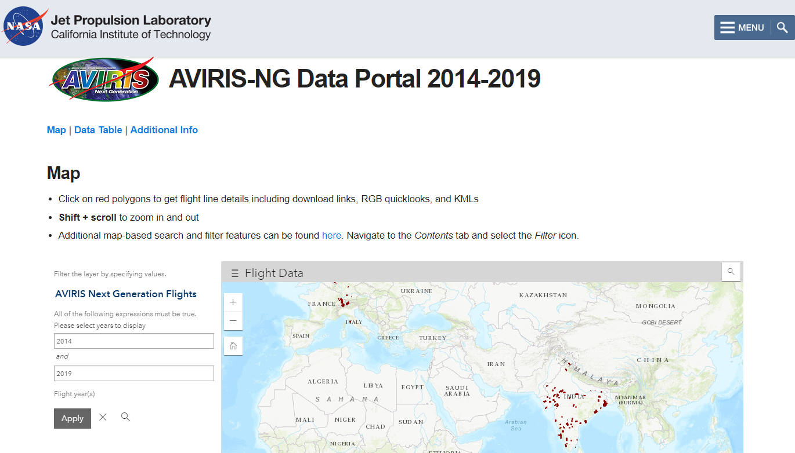

AVIRIS 简介
 AVIRIS 是指 机载可见光近红外成像光谱（Airborne Visible InfraRed Imaging Spectrometer）。是由美国NASA下属的喷气动力实验室（JPL）开发和维护的光谱成像设备。现有两代产品：
AVIRIS 是指 机载可见光近红外成像光谱（Airborne Visible InfraRed Imaging Spectrometer）。是由美国NASA下属的喷气动力实验室（JPL）开发和维护的光谱成像设备。现有两代产品：AVIRIS-Classic 和AVIRIS-NG（AVIRIS Next Generation），其中AVIRIS-Classict从1986年开始服役，目前网站上提供从1992年开始至2020年采集高光谱图像数据，主要为地面辐亮度图像，少部分图像提供反射率图像。AVIRIS-NG则提供从2012年至2020年的高光谱图像数据。所有的图像均进行了几何矫正，具有真实的地理坐标信息。目前AVIRIS-Classic提供的数据主要位于美国本土，还有少量太平洋中海岛、以及加拿大和欧洲地区的数据。AVIRIS-NG则目前主要提供欧洲和印度区域数据。
1. AVIRIS-Classic

AVIRIS是地球遥感领域的先进设备。其具备一个独特的光学传感器，能够采集波长在400~2500nm范围内的上行的光谱辐亮度信息，并进行辐亮度矫正，最终生成具有224个连续光谱通道（波段）的高光谱图像。AVIRIS曾经搭载在4种不同的飞行平台上， 分别为：NASA 的ER-2 喷气式飞机，Twin Otter International 的涡轮螺旋桨飞机，Scaled Composites’ Proteus（一种双翼高空长航时飞机）以及NASA的WB-57飞机。 ER-2飞机飞行高度约为海拔20km，航速为730km/h，Twin Otter的飞机飞行高度约为地面上4km，航速约为130km/h。 AVIRIS在主要在美国各地进行执行飞行任务，此外还在欧洲和加拿大执行任务[1]。

- 设备基本参数
| 参数名称 | 参数值 |
|---|---|
| 数据码率 | 1994年：17Mbps 1995~2004年：20.4Mbps 2005~今：16Bit |
| 数据量化 | 1994年：10bit 1995年~今：12bit |
| 探测器类型 | 可见光波段：Si探测器 近红外波段（NIR）：InGaAr 短波红外（SWIR）：InSb 液氮（LN2）制冷探测器 |
| 成像方式 | 摆扫式（Whisk broom） |
| 扫描速率 | 12Hz |
| 光谱带宽 | 10nm标称波段宽度，经过矫正，误差±1nm |
| 视场角（FOV） | 34°，总计677个像素 |
| 单像素视场角（IFOV） | 1 mrad |
- 数据下载门户网站
- 从2006年至今的数据，可以从
AVIRIS Data Product Portal网站下载：https://aviris.jpl.nasa.gov/dataportal/ - 1992年至2005年的数据，需要从网站http://aviris.jpl.nasa.gov/locator_select.php首先搜索需要的飞行记录，然后填写AVIRIS Archive Data Request form 申请数据下载
- 从2006年至今的数据，可以从
2. AVIRIS-NG

AVIRIS-NG是用来采集太阳反射光谱范围内的高信噪比连续光谱图像，并希望能够接替从1986年开始服役AVIRIS-Classic设备。其数据成果可以广泛运用于生态环境、土壤地质、内陆湖泊、冰雪、生物质燃烧、大气、环境污染、农业等多种研究中。
AVIRIS-NG能够以5nm的光谱分辨率采集波长在380~2510nm范围的连续光谱图像。目前该设备已经成功搭载在Twin Otter平台上，以0.3m~4m的空间分辨率采集了光谱图像数据，单条扫描线包含600个像素。在不久的将来计划搭载在具有更高飞行高度的NASA ER-2平台上。 AVIRIS-NG的跨条带（Cross-track）光谱一致性优于95%，且光谱维IFOV一致性优于95%。[2]


- 设备基本参数
| Parameter | Value |
|---|---|
| 波长范围（Wavelength） | 380 nm to 2510 nm |
| 光谱分辨率 (FWHM, minimum) | 5nm ± 0.5 nm |
| FOV（Field of View） | 36 ± 2 degrees with 600 resolved elements |
| IFOV（Instantaneous Field of View） | 1.0 1.4 mrad ± mrad |
| Spatial Sampling (maximum observed at resolved elements) | 1.0 mrad ± 0.1 mrad |
| Spectral Distortion (smile) | Uniformity > 97% |
| Spectral Distortion (keystone) | Unformity >97% |
| 空间和光谱分辨率（FPA） | 480 (spectral direction) X 640 (cross track) |
| 帧率（Frame Rate） | 10 - 100 frames per second |
| Pixel Size | 27 microns x 27 microns |
| Calibration | On-board calibrator |
| 数据量化（Data Resolution） | 14 bits |
| Data Rate | Up to 74 MB/s of throughput |
| Data Volume | Up to 1.0 TB of raw data before disk swap |
| Physical Volume | 83 cm (H) x 57 cm (Dia.) plus electronics boxes and racks |
| Mass | 465kg |
| Vacuum Requirement | 10-4 torr |
| Ambient Operating Temperature | -40 to +50C |
| Maximum Altitude | 18 km |
| Cool-Down Time | < 48 hours |
| Operational Time / Mission | 14 days |
-
数据下载门户网站
- 2014年~2020年的数据可以从
AVIRIS-NG Data Portal网站下载：https://avirisng.jpl.nasa.gov/dataportal/

- 2014年~2020年的数据可以从
参考文献
AVIRIS-Classic门户，https://aviris.jpl.nasa.gov/index.html ↩︎
AVIRIS-NG门户，https://aviris-ng.jpl.nasa.gov/index.html ↩︎